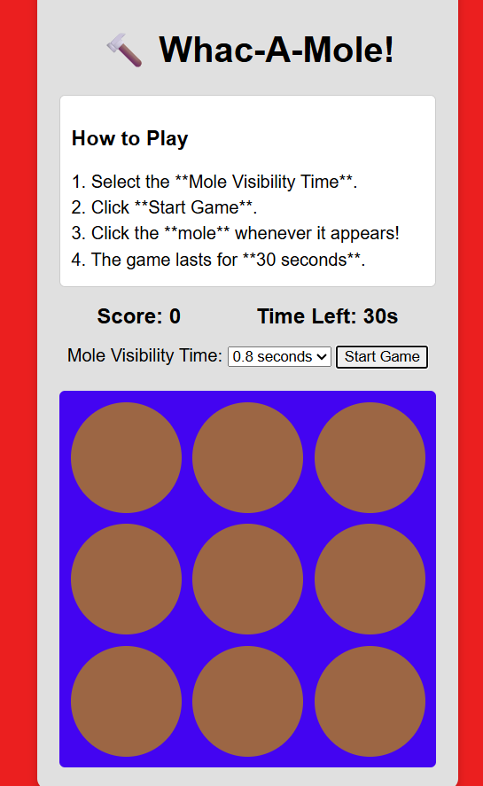

プログラム動作イメージ

プログラム概要とアピールポイント
概要
（JavaScriptで作成したブロック崩しゲームです。3段階の速度調節機能と、10回ミスで終了する「NG制限」を搭載しています。）
（Canvas APIを使用したゲームです。リアルタイムの当たり判定、60FPSの描画ループ、動的な難易度変更を実装しています。）
（古典的なブロック崩しです。10回ミスする前に、矢印キーでパドルを操作してすべてのブロックを消去します。）
アピールポイント
- （アピールポイント: HTMLのプルダウンメニューとJavaScriptの変数を連動させ、初心者から上級者まで楽しめる設計にしました。単に動くだけでなく、ユーザーの好みに合わせた「遊びやすさ」を追求した点が高評価ポイントです。）
- （アピールポイント: 特にブロックとの接触判定では、配列（Array）を使用して「当たった瞬間にそのブロックだけを消す」というフラグ管理を行っています。複数のオブジェクトを個別に制御するプログラミング技術をアピールできます。）
- （アピールポイント: キーボード入力に対するパドルの反応速度を上げるため、フラグ管理（Boolean）を用いて「カクつき」のない滑らかな操作感を実現しました。また、残りライフ（NG数）をリアルタイムで表示し、緊張感のあるゲーム性を演出しています。）